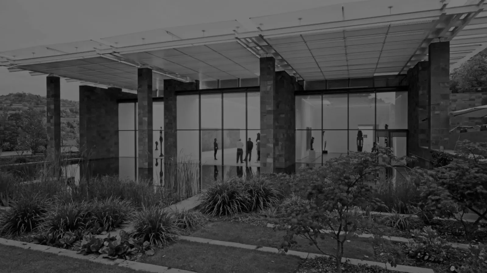

CENTRE GEORGES POMPIDOU
HISTOIRE
Le Centre Georges Pompidou, souvent appelé le Centre Pompidou, a été conçu dans les années 1970 comme un centre culturel majeur à Paris, en France. Son idée initiale remonte au début des années 1960, lorsque le président français Georges Pompidou, désireux de créer un espace dédié à l'art moderne et contemporain, a envisagé un projet audacieux.
Le projet a été réalisé grâce à la collaboration d'une équipe d'architectes renommés, notamment Renzo Piano, Richard Rogers, et Gianfranco Franchini. L'objectif était de créer un lieu novateur qui abriterait non seulement des œuvres d'art, mais aussi des espaces de rencontre, des bibliothèques et des zones d'échange culturel.
L'architecture du Centre Pompidou est révolutionnaire pour l'époque : les tuyaux, escalators et structures habituellement cachées à l'intérieur des bâtiments sont exposés à l'extérieur, donnant au bâtiment un aspect industriel et coloré, tout en libérant l'intérieur pour offrir des espaces flexibles pour les expositions et les événements.
INFLUENCE DE PIANO
Renzo Piano a eu une influence majeure sur la conception du Centre Georges Pompidou à Paris, un projet emblématique de l'architecture contemporaine. En collaboration avec Richard Rogers, Piano a contribué à repenser radicalement la manière dont un espace culturel pourrait être conçu et vécu.
Son approche novatrice de l'architecture, axée sur la transparence, la fonctionnalité et la flexibilité des espaces, a été cruciale dans la conception du bâtiment. Leur idée d'exposer à l'extérieur les éléments structurels tels que les escalators, les tuyaux et les gaines, a permis de libérer l'intérieur du bâtiment, offrant des espaces flexibles et ouverts pour les expositions et les activités culturelles.
L'influence de Renzo Piano sur le Centre Pompidou peut être observée dans la vision audacieuse d'un bâtiment qui se présente non seulement comme un lieu d'exposition d'art, mais aussi comme un espace social et dynamique au cœur de Paris. Sa conception a radicalement changé la façon dont les gens interagissent avec l'architecture et a défini de nouveaux standards pour les futurs espaces culturels en combinant fonctionnalité, esthétique et accessibilité.
DÉCOUVRIR
Si l’article vous a plu, n’hésitez pas à lire celui sur la Fondation Beyeler, une autre grande œuvre de Piano.
